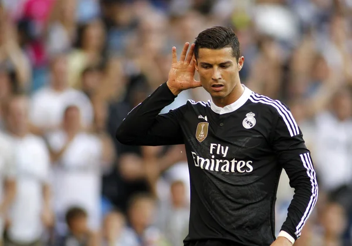

Cristiano Ronaldo s’est confié ce mardi, sur le site The Players Tribune, sur un événement qui a changé sa carrière de footballeur. Cristiano Ronaldo (32 ans) a partagé ce mardi un moment d’intimité avec les lecteurs de The Players Tribune. L’attaquant du Real Madrid s’est longuement épanché sur ses premiers pas ballon au pied, sur le bitume de Madère. A sept ans, le futur possesseur de quatre Ballons d’or (pour l’instant) a révélé une anecdote qui a influencé sa carrière professionnelle. A lire aussi >> Real: Ronaldo, toujours muet en Liga, et "très déçu", assure Zidane L'importance de sa famille Alors pensionnaire du CF Andorinha, sur son île natale, le natif de Funchal est déjà au-dessus du lot et enchaine les buts avec les petits du club. Chaque soir de match, son père raconte à sa sœur et sa mère les exploits du petit Cristiano. Celles-ci ne sont nullement touchées par ces histoires de foot. Pourtant, pendant l’échauffement d’un match, Ronaldo lève les yeux vers les tribunes et aperçoit sa mère et sa sœur pour la première fois. "Je me suis senti si bien à cet instant, partage le champion d’Europe 2016. Ça voulait dire beaucoup pour moi. C’était comme si quelque chose en moi avait changé. J’étais vraiment fier". "Ce jour-là, je me suis senti protégé et aimé. En portugais, on dit Menino querido da familia." A voir aussi >> Dortmund-Real: Ronaldo fête sa 400e avec un doublé Son fils sur le terrain de Cardiff Cristiano partage ensuite son souhait de devenir le plus grand joueur du monde et les différentes étapes de sa vie de footballeur. Et si cet instant revient aujourd’hui dans l’esprit de la star du Real Madrid, c’est que son fils a exactement 7 ans. Le 3 juin dernier, à Cardiff (Pays de Galles), au terme d’une finale de Ligue des champions remportée face à la Juventus (4-1), et marquée par le doublé du Madrilène, son fils et celui de Marcelo effectuent un tour d’honneur avec leurs pères. "C’était tellement d’émotions simultanées que c’était ineffable. La chose avec laquelle je peux comparer cela, c’est quand je m’échauffais à Madère et que j’ai vu ma mère et ma sœur dans les tribunes". VIDEO >> Double Contact - Ninho : "Ronaldo donne beaucoup d’argent, je l’estime pour ça"
L’ÉVÉNEMENT QUI A MARQUÉ LA CARRIÈRE DE CRISTIANO RONALDO
